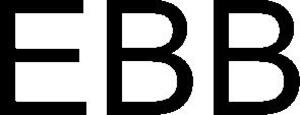

Trade Mark Journal No.2025/047 21 November 2025
WO0000001885546 (3)
Office of origin: Australia
Date of International Registration:22 September 2025
Date of designation in the UK:
22 September 2025

- Class 3
- Deodorant preparations for personal use; deodorant sprays for personal use; deodorant sticks for personal use; depilatory preparations; cleansing preparations for use with depilatory preparations; depilatories; depilatory products; antiperspirant deodorants; antiperspirant preparations; antiperspirants for personal use; pomanders (aromatic substances); non-medicated sun barrier preparations; skincare cosmetics; skincare preparations (cosmetic); aloe vera preparations for cosmetic purposes; anti-sun preparations (cosmetics); astringents for cosmetic purposes; cellulose wipes for cosmetic purposes; collagen preparations for cosmetic purposes; cosmetic masks; cosmetic milks; cosmetic preparations; cosmetic preparations for slimming purposes; cosmetic products for protection against the sun; cosmetics containing plant extracts, other than for pharmaceutical purposes; cosmetics; cosmetics in the form of gels; cosmetics in the form of milks; cosmetics preparations; cosmetics to remove pigmentation marks; eye masks (cosmetic); glitter for cosmetic purposes; herbal extracts for cosmetic purposes; impregnated cloths for cosmetic use; impregnated pads containing cosmetic preparations; non-medicated cosmetic preparations; non-medicated cosmetics; ointments for cosmetic use; pumice stones for cosmetic purposes; serum (cosmetic preparations); serums for cosmetic purposes; sheet masks for cosmetic purposes; sun barriers (cosmetics); sun blocking gel (cosmetics); sun blocking preparations (cosmetics); sun gel (cosmetics); sun milk (cosmetics); sun protection products (cosmetics); sun screening preparations (cosmetics); water for cosmetic use; incense; incense spray; incense sticks; aftershave balm (not medicated); aftershave gels (non-medicated); body deodorants; deodorants for the body; body glitter; body milks; body scrubs; gels for use on the body; cosmetic preparations for use on the body; sprays for use on the body (cosmetics); body shampoos (non-medicated); body sprays (non-medicated); non-medicated gels for the body; non-medicated preparations for the care of the body; non-medicated preparations for use on the body; non-medicated products for the body; preparations for toning the body; pumice stones for use on the body; cocoa butter in the form of lotions; cuticle lotions; depilatory lotions; barrier lotions; cosmetics in the form of non-medicated lotions; sun blocking lotions (cosmetics); sun lotions (cosmetics); body lotions (other than for medical purposes); eye lotions for cosmetic use; lotion for the eyes (non-medicated); lotions for cosmetic purposes; non-medicated cleansing lotions; non-medicated eye wrinkle lotions; non-medicated hand lotion; non-medicated lotions; tissues impregnated with cosmetic lotions; wipes (tissues) impregnated with cosmetic lotions; anti-cellulite preparations; room scenting sprays; scented deodorant preparations for personal use; scented lava rocks; scented sachets; scented water; scented wax melts; scented wood; scents; facial masks (cosmetic); facial care products (cosmetic); facial preparations (cosmetic); facial scrubs (cosmetic); facial toners (cosmetic); facial washes (cosmetic); non-medicated facial lotions (cosmetic); cleansing facial masks; facial cleansers; facial packs (cosmetic); facial packs for cosmetic purposes; facial washes; facial wipes impregnated with cosmetics; conditioners for treating the hair; conditioners for use on the hair; conditioning preparations for the hair; cosmetics for use on the hair; hair balm; hair care preparations; hair care products; hair cleaning preparations; hair conditioner; hair conditioners; hair conditioning preparations; hair conditioning rinses; hair cosmetics; hair emollients (non-medicated); hair lotions; hair lotions (non-medicated); hair mousse; hair preparations; hair rinses; hair removing preparations; hair rinsing solutions; hair setting lotion; hair shampoo; hair tonic (non-medicated); hair washing agents; non-medicated gels for the hair; non-medicated hair care products; non-medicated hair lotions; non-medicated hair preparations; non-medicated hair shampoos; non-medicated lotions for the hair; non-medicated preparations for the care of the hair; non-medicated preparations for use on the hair; non-medicated shampoos for the hair; preparations for cleaning the hair; preparations for conditioning the hair; preparations for enriching the hair; preparations for the cleaning of the hair; preparations for the hair; preparations for the protection of the hair from the sun; cosmetic preparations adapted for sun-tanning; cosmetic preparations for use in giving a sun-tan effect; self tanning mists (cosmetic); self tanning preparations (cosmetic); sun-tanning preparations (cosmetics); tanning compositions (cosmetics); tanning preparations (cosmetics); self tanning lotions (cosmetic); tan lotions (cosmetic); tanning removing preparations; extracts of flowers (perfumes); extracts of perfumes; aromatics for perfumes; perfume; perfume water; perfumed body lotions (non-medicated toilet preparations); perfumed body sprays (toilet preparations); perfumed deodorants for use on the person; perfumed lotions (non-medicated toilet preparations); perfumed products (toilet preparations); perfumed substances (toilet preparations); room perfumes in spray form; room perfume sprays; perfumes; cosmetic preparations for use in suntanning; cosmetics for suntanning; suntan milk (cosmetics); suntan preparations (cosmetics); suntan lotion (cosmetics); non-medicated preparations for suntanning; non-medicated suntan lotions; non-medicated suntanning preparations; preparations for use in suntanning; cosmetic preparations for use on the face; non-medicated face lotion; beauty face packs; cleaning masks for the face; cleansers for the face; cleansing masks for the face; face washes (non-medicated); masks for the face (cosmetic); after-shave lotions; non-medicated pre-shave lotions; non-medicated shaving lotions; foams for use in shaving; foam for use in shaving; pre-shave foams; pre-shave gels; pre-shave preparations; preparations for shaving; preparations for use in shaving; shaving foams; shaving gels; shaving preparations; shaving preparations in gel form; shaving preparations in liquid form; shaving sprays; cosmetic moisturisers; moisturisers (cosmetics); moisturising gels (cosmetic); moisturising preparations (cosmetic); body moisturisers; moisturising lotions (cosmetic); moisturising body lotion (cosmetic); facial moisturisers (cosmetic); hair moisturisers; after sun moisturisers; aftershave moisturising preparations; aftershave moisturising milk; eye moisturisers for cosmetic use; non-medicated moisturisers; antiperspirants (toiletries); non-medicated sprays for use on the body (toiletries); toiletries in the form of non-medicated lotions; non-medicated rinses (toiletries); non-medicated toiletries; non-medicated toiletry products; roll-on deodorants (toiletries); toiletry preparations (non-medicated); cosmetic oils; cosmetics in the form of oils; oil for cosmetic use; oils for cosmetic purposes; oils for the breasts (cosmetics); sun blocking oils (cosmetics); sun protection oils (cosmetics); oils for the body (cosmetics); body oil; body oil spray; oil for the body; reed diffusers comprised of scented oils in a container and including reeds; scented oils; facial oil; hair oil; oils for the hair; tanning oils (cosmetics); oils for perfumes and scents; perfume oils; suntan oils (cosmetics); non-medicated suntanning oils; oils for use in suntanning; aromatic oil; aromatics (essential oils); aromatherapy oil; blended essential oils; cleansing oils; cuticle oil; natural oils for perfumes; natural oils for cosmetic purposes; non-medicated oils; products for firming the breasts; gels for use in the bath; bath beads; bath bombs; bath concentrates, not medicated; bath crystals, not medicated; bath cubes, not medicated; bath essences, not medicated; bath foams, not medicated; bath gels, not medicated; bath pearls, not medicated; bath powders, not medicated; bath preparations for the feet, not medicated; bath preparations, not for medical purposes; bath preparations, not medicated; bath salts, not for medical purposes; bath shampoo; bubble bath; bubble bath preparations; foam bath; foam preparations for the bath; foaming bath gels; foaming bath liquids; non-medicated bath preparations; non-medicated bath salts; non-medicated crystals for use in the bath; non-medicated preparations for the bath; non-medicated preparations for use in the bath; salts for bath use; preparations for use in the bath (non-medicated); preparations for the bath (non-medicated); preparations for personal use for use in the bath (non-medicated); salts for mineral water baths (non-medical); bath tea for cosmetic purposes; cosmetic bath products; cosmetic preparations for baths; cosmetic preparations for use in the bath; bath lotions, not medicated; perfumed bath foam preparations (toilet preparations); perfumed bath salts (toilet preparations); perfumed preparations for the bath (toilet preparations); bath oil concentrates, not medicated; bath oils, not medicated; non-medicated bath oils; oils being perfumed lathering products for use in the bath; non-medicated bath additives; foams for the bath; lathering products for use in the bath; gels for use in the shower; after shower gels; foams for use in the shower; non-medicated preparations for use in the shower; shower additives; shower foams; shower gels; shower preparations; antiperspirant soap; body soaps; soap free washing emulsions for the body; facial soaps; perfumed soaps; shaving soap; bath soap; shower soap; bar soap; cosmetic soaps; liquid soaps (non medicated); non-medicated soap products; non-medicated soaps; soap; deodorant creams for personal use; anti-aging creams, not medicated; anti-wrinkle cream; base cream; cocoa butter in the form of creams; cold cream, other than for medical use; depilatory creams; barrier creams; hand barrier creams; cosmetic creams; cosmetic creams for wrinkles; cosmetics in the form of creams; nourishing creams (non-medicated cosmetics); sun blocking cream (cosmetics); sun creams (cosmetics); sun protecting creams (cosmetics); toning creams (cosmetic); body creams (cosmetics); non-medicated creams for the body; facial creams (cosmetic); non-medicated creams for facial scrubs; non-medicated creams for the hair; self tanning creams (cosmetic); tanning creams (cosmetics); non-medicated suntan creams; non-medicated creams for the face; non-medicated face cream; non-medicated creams for use after shaving; non-medicated creams for use before shaving; non-medicated pre-shave creams; shaving creams; moisturising creams (cosmetic); gloves impregnated with cosmetic moisturising cream; socks impregnated with cosmetic moisturising cream; toiletries in the form of non-medicated creams; essential oil-based creams for aromatherapy use; bath creams, not medicated; non-medicated cream for use in the bath; anti-ageing creams, not medicated; aftershave creams (non-medicated); aftershave moisturising cream; after shower creams (non-medicated); after sun creams (not medicated); beauty creams (non-medicated); cleansing creams (non-medicated); conditioning creams; cream perfumes; day creams (non-medicated); hand cream; massage creams, not medicated; night creams (cosmetics); non-medicated creams for application after exposure to the sun; non-medicated creams for application before exposure to the sun; non-medicated creams; non-medicated cream for the hands; non-medicated cleaning creams for use on the person; non-medicated creams for personal care; non-medicated creams for protection against the sun; non-medicated creams for the eyes; non-medicated creams for the feet; non-medicated creams for the lips; non-medicated foot creams; non-medicated protective creams; non-medicated washing creams; perfumed creams (non-medicated toilet preparations); toning creams (non-medicated toilet preparations); cosmetic goods for care of the skin; cosmetic preparations for cleansing the skin; cosmetic preparations for skin care; cosmetic preparations for use on the skin; cosmetic products for skin care; cosmetic skin care products; cosmetics for protecting the skin from sunburn; cosmetics for the treatment of dry skin; cosmetics for use on the skin; skin balms (cosmetic); skin care preparations (cosmetic); skin care products (cosmetic); skin cleaners (cosmetic); skin cleansing preparations (cosmetic); skin hydrators for cosmetic purposes; sun skin care products (cosmetics); non-medicated skin care lotions (cosmetic); non-medicated skin lotions; non-medicated skin clarifying lotions; barrier preparations for the skin; cleaning preparations for the skin; conditioning preparations for the skin; cosmetics for bronzing the skin; essences for skin care; exfoliants for the care of the skin; exfoliants for the cleansing of the skin; non-medicated cleansing preparations for the skin; non-medicated preparations for the care of the skin; non-medicated products for skin care; non-medicated skin balms; non-medicated skin care beauty products; non-medicated skin care products; non-medicated skin preparations; non-medicated skin products; preparations for the skin (cosmetic); preparations for the skin (non-medicated); preparations for toning the skin; cosmetic products for browning the skin; skin cleansers; skin conditioners; skin emollients (non-medicated); skin foundation; skin fresheners; skin tonics (non-medicated); skin toners; stones for removing hard skin from the feet; cosmetic preparations for skin tanning; cosmetic preparations for tanning the skin; cosmetics for skin tanning; artificial skin tanning preparations for human use; suntan preparations for use on the skin; moisturising skin lotions (cosmetic); non-medicated preparations for the skin (toiletries); oils for the skin (cosmetics); skin care oils (cosmetic); vegetable based oils for use on the skin; oils for moisturising the skin after sun bathing; cosmetic creams for toning the skin; skin care creams (cosmetic); skin cleansing cream (cosmetic); skin creams (cosmetic); barrier creams for the skin; non-medicated creams for hydrating the skin; non-medicated creams for protection of the skin; non-medicated creams for softening the skin; non-medicated creams for soothing the skin; non-medicated creams for the skin; non-medicated skin creams; skin bronzing creams; skin discomfort cream (cosmetic); skin tanning creams for human use; moisturising skin creams (cosmetic); non-medicated creams for moisturising the skin; cosmetic creams for firming the skin; air fragrance reed diffusers; air fragrancing preparations; air fresheners (air fragrancing preparations); air fresheners (room fragrancing preparations); fragrance preparations; fragrances; room fragrances; room fragrancing preparations; room fragrancing products; sponges impregnated with non-medicated toiletries; sponges impregnated with soaps for household use.
Boda Body Pty Ltd
Representative: SPRINTLAW PTY LTD, 20-40 Meagher Street, Chippendale NSW 2008, AUSTRALIA